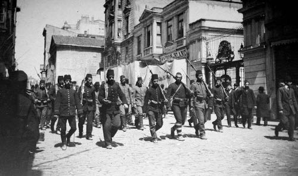
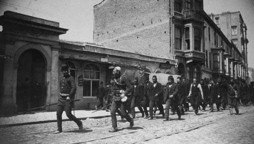
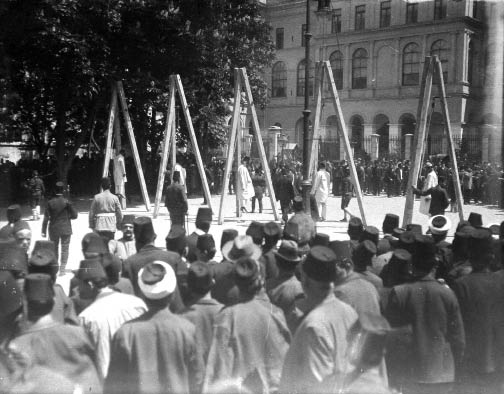

13 Nisan’da, erkenden Yıldız’a hareket başladı. Fırka karargâhı hareket üzere iken Pertev Paşa hazretleri bir araba ile Mekteb-i Harbiye’deki karargâhımıza geldi ve şifahen şu emri tebliğ etti: “Harekâtı tehir ediniz ve yeni emre intizar ediniz.” Kendilerine harekâtın başladığını söyledik. “O halde acele kıtaatı eski vaziyetlerine getiriniz” dediler. Bu vaziyetin zabıtan ve efrat arasında türlü tefsire uğrayarak fena bir netice vermesi ihtimalini ve yarına kadar Yıldız’ın yağma edilmesi ve münasebetsiz hadiselerin vuku bulması ihtimalini izah ile dün verilen emrin geri alınmasındaki sebebi sorduk.
“Hareket Ordusu Kumandanlığı’nca yeni emre göre hareket olunması isteniliyor”dan başka bir şey söylemediler.
Şevket Turgut Paşa’yı maruz kaldığı müşkilattan kurtarmak üzere bu ağır vazifeyi ben deruhde ettim. Pertev ve Turgut paşalar Harbiye Mektebi’nde kaldılar. Ben zırhlı otomobil ile Yıldız’a hareket üzerinde bulunan kıtaatın yanına gittim. Pertev Paşa, ben gelinceye kadar bekleyeceğini, kıtaatı eski vaziyetine getirmek emrini vererek, çabuk avdetimi istemişti.
Ihlamur Deresi’ni geçip Yıldız yokuşunu çıkmakta olan kolun başına kadar gittim. Alay ve tabur kumandanlarına vaziyeti anlattım. Fevkalade meyus oldular. Bunu işiten zabitlerde dahi sızıltı başladı, Değil geri dönmek, durmanın bile fena netice vereceğini görünce, mesuliyeti üzerime alarak, harekâtı ikmal ettirdim. Harbiye Mektebi efendileri (talebeleri) de bugünkü harekâtın içinde idiler.

Haraket Ordusu’ndan bir bölük.
Harbiye Mektebi’ne döndüğümde Pertev Paşa’nın bir müddet bekledikten sonra gitmiş olduğunu öğrendim. Bu aralık bir emir zabiti yeni emri getirdi. Bu emir Mahmut Şevket Paşa’nın imzasını havi idi. Muhteviyatı, “14 Nisan’da Enver, Fethi ve Niyazi beylere bir kol verilerek yine fırkamız kumandasında Yıldız’ın işgali” idi. Halbuki, Pertev Paşa araba ile Harbiye Nezareti’ne gidinceye kadar biz otomobil ile Yıldız’a gitmiş ve “hadisesizce Yıldız’ın işgal olunduğu”nu telgrafla Yıldız telgrafhanesinden Mahmut Şevket Paşa’ya yazmış bulunduk.
Pertev Paşa Mahmut Şevket Paşa’ya gittiği zaman, müşarünileyh (Mahmut Şevket Paşa) bizim Yıldız’ı işgal ettiğimiz telgrafını almış ve harekâtı durdurmayarak vazifesini ifa edemediğinden dolayı Pertev Paşa’ya da çok kızmıştı.
Yıldız’ın Enver Bey tarafından işgal olunmasını İttihat ve Terakki merkezi de istiyordu. 13 Nisan sabahı bu işgalin vaki olmasına onlar da kızdı. Propaganda ile olsun, daha evvel Enver Bey işgal etti diye şayialar yapıyorlardı.
14 Nisan sabahı Yıldız’ın harem ağaları vesairesi kafile halinde karargâhımıza gelmişler. “Yaşasın hürriyet, yaşasın Enver Bey!” diye bağırmışlardı. Gece saraya girenleri Enver’in karargâhı ve etrafındakileri de askeri zannediyorlardı. Bu hal de, Yıldız’ın Enver tarafından gece işgal olunduğu havadisini yaymıştır.
Yıldız’ın, 13 Nisan sabahı fırkamız tarafından işgaline ait deliller müteaddittir:

Yıldız Sarayı’ndan alınan saray mensupları
l – Memduh Paşa 13 Nisan günü fırkamız kıtaatı Yıldız’ı tamamıyla işgalden ve fırka karargâhı sergi dairesi karşına nakilden sonra buradan Harbiye Nezareti’ne gönderilmiştir. Memduh Paşa fırkamız kıtaatı gelinceye kadar Yıldız’ı muhafaza ile meşgul olmuştur.
2 – Harbiye Mektebi efendileri 13 Nisan sabahı emrimizde olarak Yıldız hareketine iştirak etmiştir.
3 – 13 Nisan sabahı ben zırhlı otomobil ile Yıldız’a gittiğim halde, daha evvel gelmiş hiçbir kıtaya rast gelmedim. Harbiye Mektebi efendileri ve nizamiye kıtaatı ile Yıldız kapıları bu vaziyette işgal olundu.
4 – İşgal hadisesini, Hareket Ordusu kumandanlığı, Yıldız telgrafhanesinden Şevket Turgut Paşa imzasıyla çekilen ve fırkamız tarafından işgal olunduğu sarih olan telgraftan haber aldı.
5 – Emir hilafına Yıldız’ı fırkamızın işgalinden dolayı teessür telgrafı bize geldi.
6 – Başkâtip Cevat Bey, sergi dairesi karşısındaki karargâhımıza iki kere gelerek emniyet ve iaşe meselesini görüşmüştür. Eğer bir gün evvel Enver Bey saraya girmiş olsaydı mesele onlarca hal olunabilirdi.
7 – Niyazi Bey kıtaatı ile Harbiye Nezareti’nde idi. 14 Nisan’da Yıldız harekâtına iştirak etmek üzere, 13’te bize tebliğ edilen emir kendilerine de verilmiş ve bu suretle fırka emrine Beşiktaş’a gönderilmişti. Yıldız’ın tamamıyla işgalinden sonra fırka karargâhını sergi dairesi karşısına naklettiğimiz zaman, onlar da aşağı talimhaneye gelmişlerdi. Hamidiye Camii’nden ileri geçmemeleri için kendilerine tebligat yapıldığı gibi, sergi dairesi –Hamidiye Camii– ikinci fırka dairesi imtidadınca da nizamiye kıtaatı ile bir kordon tesis olunarak saraya yakın sahada izdiham ve kargaşalığa mâni olunmuştur.

31 Mart Hadisesi failleri sehpada
8 – Aynı emri alan Enver Bey dahi, 14 Nisan sabahı yapılacak olan harekâta iştirak için gece memur olduğu cepheye gelmiş ve Yıldız’ın işgal olunduğunu görünce ferden saraya girmiştir.
9 – Bunlardan başka, Şevket Turgut Paşa’nın Yıldız hareketini re’sen yaptırdığından dolayı, İstiklal Harbi esnasında Vahidettin tarafından divan-ı harbe verilerek mahkûm dahi edilmiş olduğunu ilave edeyim.
Bulgarların, Yıldız harekâtına iştiraklerine gelince:
10 Nisan akşamı, karargâhımız Silahtarağa’da iken Enver Bey nezdimize geldi. Beraberinde getirdiği Sandanski çetesini takdim etti. Bunlar hakkında kendisine şu teklifte bulundum: “Bunları getirmeseydin daha iyi olurdu... Bu mücadeleyi bir Türk davası olarak halletmemiz lazımdır. İstanbul kıtaatı bunlardan haberdar edilerek mürettep bir oyun olması da nazar-ı itibara alınmalıdır.” Enver Bey cevabında, onların müracaatını kıramadığını, aynı zamanda avcı taburlarının bomba kullanmak hususundaki maharetlerine ancak bu komitacılarla mukabele edebileceğini düşündüğünden gelmelerini kendisi de muvafık gördüğünü bildirdi. Karşı tarafın topçusunu nasıl felce uğrattığımızı ve mukavemetin ancak kışlalarda olacağını, avcı taburlarının bombalarına karşı topçumuzla işi halledeceğimizi izah ederek Bulgar çetesinin müsademeye sokulmamalarını, bunların vereceği zayiatın aleyhimize kaydolacağını söyledim. Enver Bey mütalaamı tasvip etti ve bu hususu nazar-ı itibara alacağını vaat ederek ayrıldı. Böylece hareket ettiğini de sonradan öğrendim. Müsademe yerlerinde bazı halk, hatta ecnebi muhabir bile yaralandığından Bulgarların birkaç zayiatını görerek, esaslı müsademeye sevk olundukları zannolunmamalıdır.